Pedrinscrk — emerald profile preview
Local preview of the assets that will appear in the GitHub profile README. Animated SVGs replay when reloaded.
portrait
portrait-dark.svg
portrait-light.svg
terminal hero
engineering pipeline
language radar
contribution engine
stats + project cards